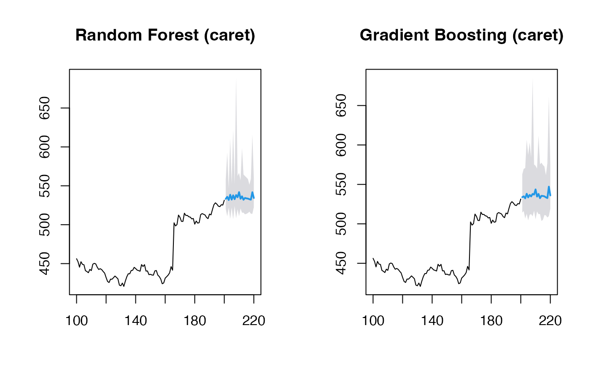
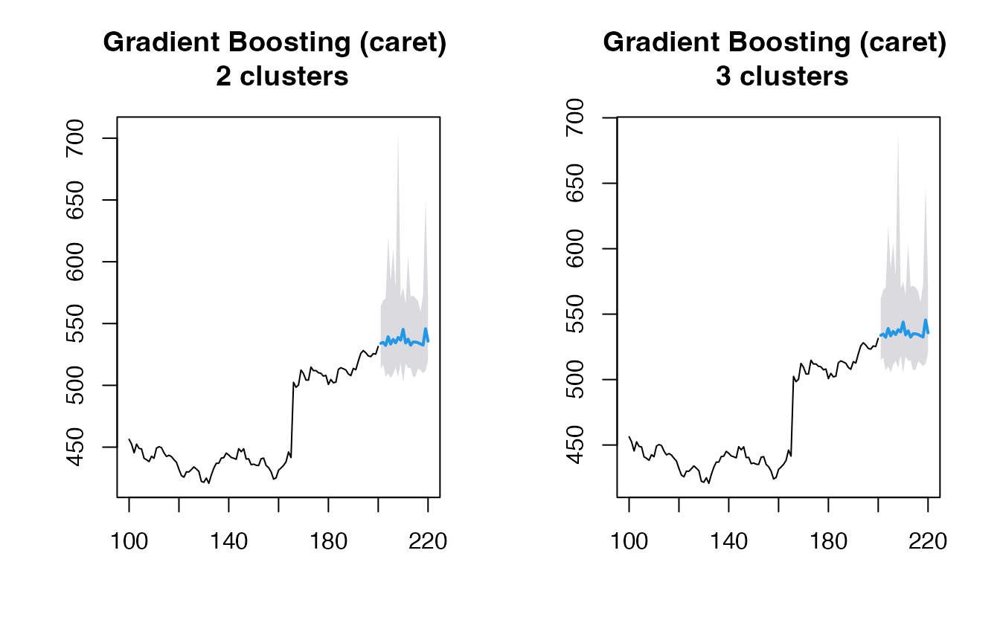
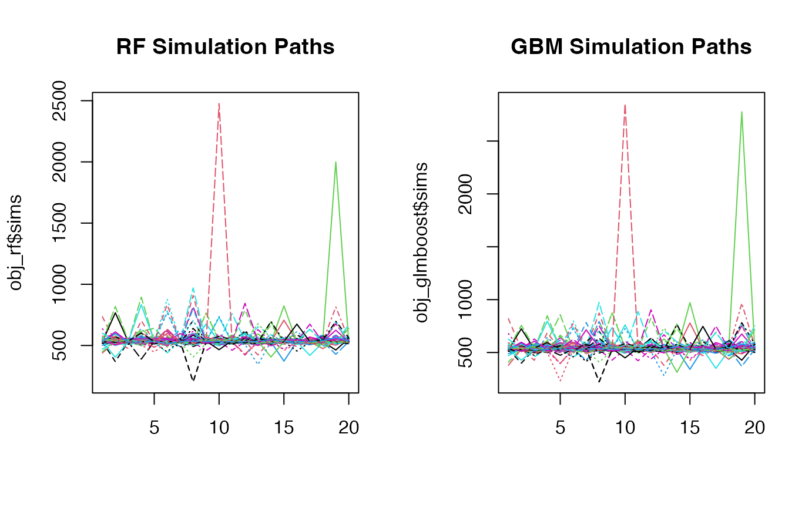
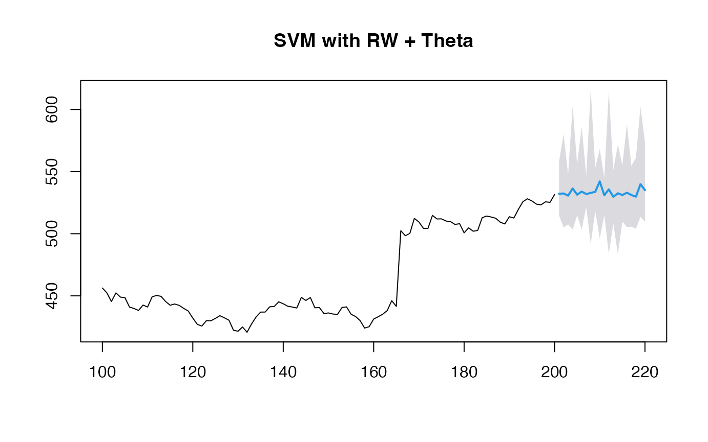

mlarch.RmdProbabilistic stock forecasting often relies on parametric models
like ARIMA for the mean and GARCH for volatility. The
mlarchf function in the ahead package offers a
flexible hybrid alternative to ARMA-GARCH by combining machine learning
approaches with ARCH effects.
The model decomposes the time series into two components:
where:
The key innovation is using machine learning methods
and conformal prediction to model the volatility component, allowing for
more flexible and potentially more accurate volatility forecasts than
traditional GARCH models. The function supports various machine learning
methods through parameters fit_func and
predict_func as in other ahead models, and
through the caret package.
The forecasting process involves:
auto.arima)(basically a supervised regression of squared residuals on their lags) is a good approximation of the latent conditional volatility
This new approach combines the interpretability of traditional time series models with the flexibility of machine learning, while maintaining proper uncertainty quantification through conformal prediction.
Let’s start with a simple example using the Google stock price data
from the fpp2 package:
y <- fpp2::goog200
# Default model for volatility (Ridge regression for volatility)
(obj_ridge <- ahead::mlarchf(y, h=20L, B=500L))## Point Forecast Lo 95 Hi 95
## 201 532.2466 517.5339 549.7756
## 202 531.7224 508.7408 551.2735
## 203 533.2419 519.0815 549.6869
## 204 538.2220 519.6208 558.4489
## 205 533.6841 515.4832 550.8369
## 206 536.0713 522.1240 551.1259
## 207 537.9695 520.3529 550.8776
## 208 536.6699 519.0575 552.6136
## 209 540.0722 520.8841 557.9272
## 210 540.1827 527.2999 564.3716
## 211 541.1687 524.6547 553.8595
## 212 540.4668 524.1068 562.6405
## 213 540.3615 522.8569 564.6440
## 214 541.6808 524.9869 556.9404
## 215 541.9843 526.4018 563.4523
## 216 542.8743 527.5210 562.6983
## 217 543.3401 528.7225 560.6608
## 218 543.5208 522.6618 565.3813
## 219 544.4165 528.6999 560.2330
## 220 544.7700 526.8607 563.6331The package supports various machine learning methods for volatility modeling. Here are some examples:
# Random Forest
(obj_rf <- ahead::mlarchf(y, fit_func = randomForest::randomForest,
predict_func = predict, h=20L, B=500L))## Point Forecast Lo 95 Hi 95
## 201 531.8143 514.0258 554.1055
## 202 531.5556 504.6889 558.1580
## 203 533.0378 517.1116 550.3188
## 204 537.7664 509.8933 570.6105
## 205 533.5323 513.6636 554.5959
## 206 536.1821 516.5331 556.3737
## 207 536.8515 518.0010 550.7236
## 208 536.0937 511.7438 554.9947
## 209 539.1468 519.0466 556.9683
## 210 539.8936 524.2451 566.4302
## 211 540.1502 518.3834 554.1485
## 212 540.0729 519.9547 565.4969
## 213 540.2986 522.5850 565.1758
## 214 541.4363 519.2166 562.2307
## 215 541.8151 524.2480 560.9517
## 216 542.5253 522.4323 568.2662
## 217 543.2387 527.9405 562.7878
## 218 543.1521 514.5953 569.5204
## 219 544.2518 527.5976 561.3014
## 220 544.0137 521.7315 567.3796
# Support Vector Machine
(obj_svm <- ahead::mlarchf(y, fit_func = e1071::svm,
predict_func = predict, h=20L, B=500L))## Point Forecast Lo 95 Hi 95
## 201 532.1457 521.5853 546.6272
## 202 532.2275 520.2017 543.1778
## 203 533.1296 518.5113 550.7918
## 204 537.8921 518.8587 559.3989
## 205 533.6028 516.0051 551.5900
## 206 536.0897 523.8729 550.9466
## 207 537.3993 523.3728 547.4128
## 208 536.2989 508.2121 559.3998
## 209 539.4167 524.6314 553.9431
## 210 539.4625 531.3708 553.7686
## 211 540.9109 524.5583 552.7002
## 212 540.2719 525.1185 559.0425
## 213 540.2893 526.4269 559.3073
## 214 541.4419 529.9025 551.8349
## 215 541.8953 529.1537 559.2589
## 216 542.6705 523.7436 567.2354
## 217 543.2557 532.1916 556.4786
## 218 543.6567 527.9506 558.3490
## 219 544.2943 527.3209 561.5207
## 220 544.5991 526.5230 562.9167
# Elastic Net
(obj_glmnet <- ahead::mlarchf(y, fit_func = glmnet::cv.glmnet,
predict_func = predict, h=20L, B=500L))## Point Forecast Lo 95 Hi 95
## 201 532.3071 515.7973 552.1411
## 202 531.7216 508.2767 551.7320
## 203 533.2533 518.2002 551.1174
## 204 537.6639 522.1668 554.5648
## 205 533.6548 514.0395 551.8262
## 206 536.1104 520.9228 551.0152
## 207 538.0337 521.1769 550.8287
## 208 536.7910 521.2423 551.4666
## 209 540.0483 521.6461 556.5542
## 210 540.3077 526.3785 566.3170
## 211 541.1819 524.9465 554.0462
## 212 540.5287 525.6995 562.5394
## 213 540.4023 522.5089 564.7103
## 214 541.7220 524.7038 556.4230
## 215 542.0254 526.4180 563.1878
## 216 542.9348 527.5376 564.1511
## 217 543.3566 528.6570 561.2644
## 218 543.5358 522.3445 565.5689
## 219 544.4455 528.6495 560.2803
## 220 544.8579 526.3796 563.5331Let’s visualize the forecasts:
The package also supports models from the caret package,
which provides access to hundreds of machine learning methods. Here’s
how to use them:
y <- window(fpp2::goog200, start=100)
# Random Forest via caret
(obj_rf <- ahead::mlarchf(y, ml_method="ranger", h=20L))## Point Forecast Lo 95 Hi 95
## 201 533.1942 520.3894 557.9968
## 202 535.8328 510.7972 592.7518
## 203 531.7639 522.1573 546.4039
## 204 538.5256 507.5127 610.6695
## 205 532.2756 522.1022 552.3844
## 206 537.7818 507.2160 621.5468
## 207 532.8064 524.0282 551.5108
## 208 538.1088 508.2841 688.9766
## 209 535.3119 519.9287 562.6560
## 210 541.8984 510.9472 566.6341
## 211 533.3648 520.8912 556.7568
## 212 536.4590 515.4437 598.2852
## 213 532.0537 515.5397 564.5511
## 214 534.4166 513.4333 562.5919
## 215 533.8548 513.9495 560.7047
## 216 533.5354 515.0453 558.7236
## 217 532.7951 516.7289 551.4114
## 218 532.2228 514.1241 558.9574
## 219 541.7978 513.9821 615.8290
## 220 534.3532 522.6493 559.3704
# Gradient Boosting via caret
(obj_glmboost <- ahead::mlarchf(y, ml_method="glmboost", h=20L))## Point Forecast Lo 95 Hi 95
## 201 533.8252 514.3703 562.7984
## 202 534.8558 516.2190 569.7816
## 203 532.3502 506.7272 570.7238
## 204 538.1339 512.7964 606.5020
## 205 533.5103 504.3804 587.2346
## 206 536.6879 511.4955 603.1027
## 207 534.7480 512.3785 584.2737
## 208 537.9370 509.5821 685.2819
## 209 537.0717 516.6103 575.2677
## 210 543.6792 505.7882 573.6846
## 211 534.5699 515.7037 569.9977
## 212 537.9490 512.3064 611.7948
## 213 532.5497 512.5683 575.4367
## 214 535.5397 503.6336 577.5308
## 215 535.3097 505.1548 574.5355
## 216 534.8836 511.1934 572.7335
## 217 533.6113 510.7453 561.6863
## 218 532.6608 508.0683 576.8651
## 219 547.1413 509.8054 661.3499
## 220 536.0635 519.3610 574.8321
# Gradient Boosting via caret and using clustering explicitly
(obj_glmboost2 <- ahead::mlarchf(y, ml_method="glmboost", n_clusters=2, h=20L))## Point Forecast Lo 95 Hi 95
## 201 533.9670 513.3365 564.6910
## 202 534.7531 516.6831 568.6166
## 203 532.3439 506.9057 570.4409
## 204 539.3445 509.3984 620.1481
## 205 533.3965 505.8975 584.1131
## 206 537.2197 509.4556 610.4145
## 207 534.3878 514.4827 578.4574
## 208 538.7945 506.6749 705.7025
## 209 536.5576 517.9769 571.2429
## 210 545.3108 502.3527 579.3289
## 211 534.2147 517.5159 565.5725
## 212 537.3703 514.0211 604.6118
## 213 532.4650 514.0626 571.9630
## 214 535.1049 506.6146 572.6006
## 215 534.9731 507.4671 570.7534
## 216 534.4930 513.5204 568.0010
## 217 533.4652 512.1655 559.6170
## 218 532.5614 510.0353 573.0516
## 219 545.8281 511.6225 650.4612
## 220 535.7296 520.2432 571.6757
(obj_glmboost3 <- ahead::mlarchf(y, ml_method="glmboost", n_clusters=3, h=20L))## Point Forecast Lo 95 Hi 95
## 201 533.7531 514.8959 561.8361
## 202 534.7417 516.7344 568.4880
## 203 532.3394 507.0339 570.2376
## 204 539.0951 510.0984 617.3367
## 205 533.4275 505.4840 584.9638
## 206 536.7839 511.1273 604.4226
## 207 534.4096 514.3552 578.8099
## 208 538.1287 508.9320 689.8485
## 209 536.3611 518.4991 569.7046
## 210 543.9907 505.1324 574.7621
## 211 534.1349 517.9232 564.5779
## 212 537.2553 514.3618 603.1845
## 213 532.4347 514.5984 570.7174
## 214 535.0273 507.1464 571.7209
## 215 534.9431 507.6733 570.4161
## 216 534.4644 513.6906 567.6548
## 217 533.4286 512.5212 559.0988
## 218 532.5479 510.3030 572.5326
## 219 545.5839 511.9604 648.4367
## 220 535.6846 520.3622 571.2498Visualizing the forecasts:
par(mfrow=c(1, 2))
plot(obj_rf, main="Random Forest (caret)")
plot(obj_glmboost, main="Gradient Boosting (caret)")
par(mfrow=c(1, 2))
plot(obj_glmboost2, main="Gradient Boosting (caret) \n 2 clusters")
plot(obj_glmboost3, main="Gradient Boosting (caret) \n 3 clusters")
Looking at the simulation paths:
par(mfrow=c(1, 2))
matplot(obj_rf$sims, type='l', main="RF Simulation Paths")
matplot(obj_glmboost$sims, type='l', main="GBM Simulation Paths")
You can also customize both the mean forecasting model and the model for forecasting standardized residuals:
# Using RW + Theta method for mean and residuals along with SVM for volatility
(obj_svm <- ahead::mlarchf(y, fit_func = e1071::svm,
predict_func = predict, h=20L,
mean_model=forecast::rwf,
model_residuals=forecast::thetaf))## Point Forecast Lo 95 Hi 95
## 201 532.1775 514.6665 558.2942
## 202 532.4083 504.9376 580.0858
## 203 530.6699 507.5326 547.7991
## 204 536.4536 503.3606 602.4156
## 205 531.4187 514.8402 555.7489
## 206 533.9144 503.3744 586.3812
## 207 531.9552 521.6180 546.5420
## 208 532.8098 491.8752 615.5713
## 209 533.7783 518.3450 552.8063
## 210 542.1375 495.9837 568.1556
## 211 530.9328 515.0316 544.9763
## 212 535.7558 483.9463 614.6500
## 213 529.7376 508.0994 551.3456
## 214 532.5587 483.4901 571.6406
## 215 531.1536 509.6689 555.1067
## 216 533.0026 505.4402 588.2495
## 217 531.1530 505.6409 554.5414
## 218 529.8134 503.9893 561.2618
## 219 539.8892 513.4709 602.1700
## 220 534.9864 509.7193 573.6902
# Using Theta + Theta method for mean and residuals along with GLMNET for volatility
(obj_glmnet <- ahead::mlarchf(y, fit_func = glmnet::cv.glmnet,
predict_func = predict, h=20L,
mean_model=forecast::thetaf,
model_residuals=forecast::thetaf))## Point Forecast Lo 95 Hi 95
## 201 533.0855 505.1255 567.3193
## 202 534.5789 516.3211 567.0034
## 203 532.0545 504.4716 561.2268
## 204 536.8533 514.6104 583.7142
## 205 534.4829 512.1242 568.0162
## 206 537.9424 513.3540 603.6845
## 207 536.4837 514.7619 571.8178
## 208 538.5018 514.2014 620.2802
## 209 539.8286 521.6344 579.7385
## 210 544.9854 511.4274 569.1716
## 211 537.6959 516.0784 564.5076
## 212 541.2692 521.2943 601.0184
## 213 537.1602 513.7672 571.0241
## 214 540.1996 510.7031 578.1006
## 215 540.4992 514.8352 573.1282
## 216 541.3317 517.4155 574.5229
## 217 539.9518 518.2207 562.9001
## 218 539.9175 515.6045 576.8407
## 219 552.4436 524.8413 636.8251
## 220 544.1237 530.3648 575.8377
plot(obj_svm, main="SVM with RW + Theta")
plot(obj_glmnet, main="Elastic Net with Theta + Theta")When using non-ARIMA models for the mean forecast, it’s important to check if the residuals of the mean forecasting model are centered and stationary:
# Diagnostic tests for residuals
print(obj_svm$resids_t_test)##
## One Sample t-test
##
## data: resids
## t = 1.0148, df = 99, p-value = 0.3127
## alternative hypothesis: true mean is not equal to 0
## 95 percent confidence interval:
## -0.7180739 2.2214961
## sample estimates:
## mean of x
## 0.7517111
print(obj_svm$resids_kpss_test)##
## KPSS Test for Level Stationarity
##
## data: resids
## KPSS Level = -5.6618e-230, Truncation lag parameter = 4, p-value = 0.1
print(obj_glmnet$resids_t_test)##
## One Sample t-test
##
## data: resids
## t = 1.0992, df = 100, p-value = 0.2743
## alternative hypothesis: true mean is not equal to 0
## 95 percent confidence interval:
## -0.6460748 2.2513707
## sample estimates:
## mean of x
## 0.8026479
print(obj_glmnet$resids_kpss_test)##
## KPSS Test for Level Stationarity
##
## data: resids
## KPSS Level = 0.26089, Truncation lag parameter = 4, p-value = 0.1